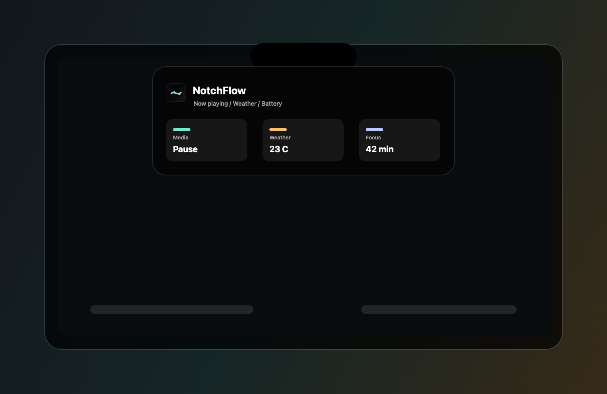

v0.1.0 developer preview
NotchFlow
A compact control surface living around the Mac notch.

Hover, pin, control, glance.v0.1.0 developer preview
A compact control surface living around the Mac notch.

Hover, pin, control, glance.